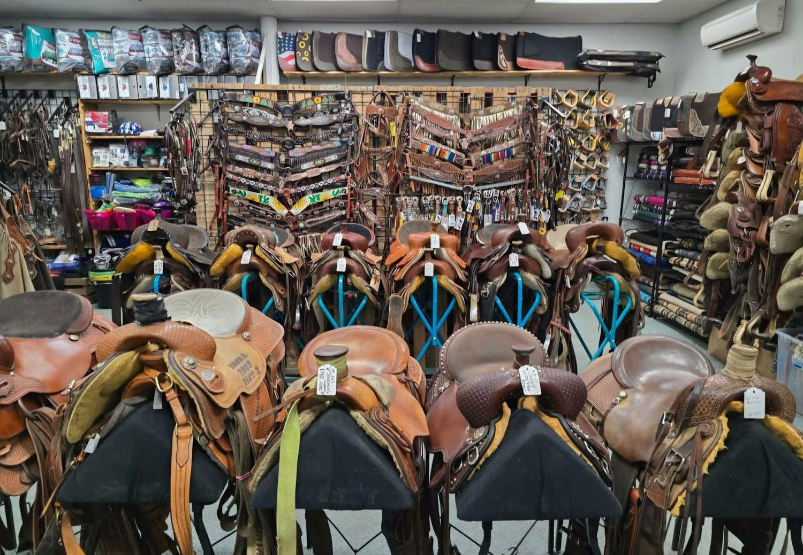

Anything cowgirl, cowboy
or horse, under one roof.
A real tack shop on Cleveland Blvd with new and used saddles, honest fitting advice, turquoise jewelry and a wall of hats. The kind of hidden treasure folks drive across the valley for.

A tack shop that actually knows tack.
You will not get talked into the wrong saddle here. You will get a straight answer, a fair price, and the kind of welcome that makes people call this place a hidden treasure.
Honest, knowledgeable help
Owner Melissa and the crew ride and know their gear. Tell them what you need and they will point you right, even if it is the cheaper option.
New and used, side by side
From a first saddle for a new horse to a fine show rig, there is good gear at every price, plus a rotating stock of quality used tack.
More than horse gear
Turquoise earrings, purses, hats and gifts worth the trip even if you have never sat a horse. An underrated find in Caldwell.
Six corners of the shop, one friendly counter.
Tap any card to see what is inside, who it is good for, and what to expect when you stop by.
Hover the cards. Each one tilts in real 3D, hand built for this site.
Try the saddle before you buy it.
A saddle has to fit the horse and the rider. So on most saddles, you can take it home the same day and try it, with a 24 hour no risk return if it does not sit right. No pressure, no guessing.
- Take it the same day you find it
- 24 hour, no risk return if the fit is wrong
- Fitting help from people who ride
Easy as a Saturday drive to Caldwell.
Stop in
Find us on Cleveland Blvd, Tuesday through Saturday. No appointment, just come on in.
Tell us the horse
What you ride, what you need, and your budget. We will walk you to the right aisle.
Try the fit
Saddles can go home the same day with our 24 hour no risk return so you know it fits.
Ride happy
Leave with gear that works, a fair price, and a shop that remembers your name next time.
Wall to wall, floor to ceiling.
Real photos from the shop floor in Caldwell.


What riders say about R Ranch.
Real, unedited Google reviews from folks who shop here.
A little shop with a big reputation.
R Ranch Enterprises grew the old fashioned way, one honest sale and one happy rider at a time. Owner Melissa built a place where a kid getting their first horse and a seasoned hand looking for a show saddle get the same patient, knowledgeable welcome. Customers call it a hidden treasure and a perfect example of old Idaho hospitality, and that is exactly how we like it.
Stop by, say hello to the shop dogs, and let us help you find the right gear without the upsell. We are on Cleveland Blvd in Caldwell, Tuesday through Saturday.
How to know a saddle actually fits your horse
A plain English guide to saddle fit, why it matters, and how our same day try-out takes the guesswork out of it. Read the full post for the complete guide.
Questions, answered.
Do you carry both new and used saddles?
Yes. We keep a rotating stock of new and quality used saddles for many disciplines, and we will help you find the right fit for your horse and your budget.
Can I try a saddle before I buy it?
Yes. On most saddles you can take it home the same day and try it on your horse, with a 24 hour no risk return if it does not fit.
What else do you sell besides tack?
Plenty. Turquoise and western jewelry, purses, cowboy hats and caps, apparel and gifts. Lots of folks come in for the jewelry alone.
Do you buy or take used tack on consignment?
We regularly take in quality used tack and saddles. Call or stop by and we will talk through what you have.
Where are you and when are you open?
We are at 2910 Cleveland Blvd in Caldwell, Idaho. Open Monday through Thursday 11 AM to 5 PM, Friday 10 AM to 5 PM, Saturday 10 AM to 4 PM, closed Sunday. Call (208) 318-8888.
Your next saddle is in Caldwell.
New or used, jewelry or hats, honest advice every time. Stop by the shop or give us a call.